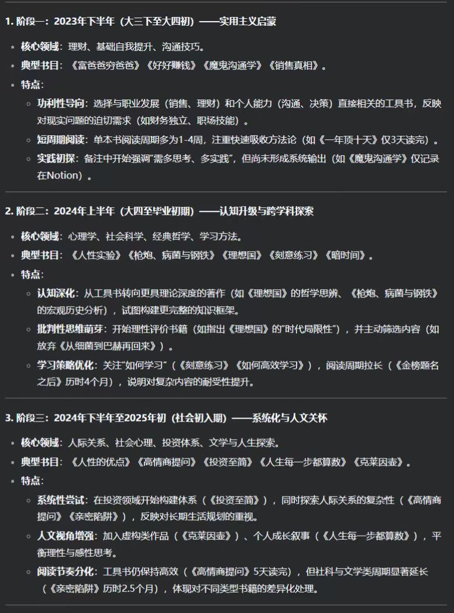
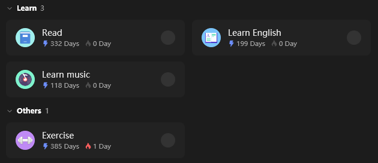

2025思变而变
本文的目的在于回顾之前做出的改变，思考迷茫的现状，并希望2025年有所改变。
每个人都想自己过得更好，不管是从何种方面吧，可能是心理上、情感上、成就上、学习上等等，可是有些人只是想一想，在行动上就无动于衷。我不想延续这种方式，不想到最后有心无力。既然想了，就不浪费这些脑细胞，就要有一定的尝试，作为试错机会，不断累积的机会成本很宝贵的。
站在当前的节点上，过去是由一条条已经确定的路组成，而未来则是无数不确定的路，至于未来想走什么路，需要现在做好规划。
关于个人
我不知道我之前的自己是什么样子，但我越发清楚自己非常喜欢做统筹全局的规划，喜欢生活井然有序，同时又充满未知和挑战。有序性在于对于自己的安排要是明确的，不能稀里糊涂地过完这一天，不管是玩也好，是学也好，总之可能提前安排，也或者有所目标。
如何走到今天的十字路口
学业中跌跌撞撞
大一到大三我基本一直是循规蹈矩，在学校培养计划的剧本中按部就班地进行，毫无质疑。从高中过渡到大学，我的学习方式还不时透露着高中学习习惯的痕迹，导致我在初入大学时，没有及时脱离原有的思维桎梏。所幸在学业剧本的演进中，我还进行了其他的探索，在大创竞赛中游历了1年左右之后，选择退出并专注于ACM算法竞赛。因为我在学校的培养计划中我完成的比较好，所以我拿到了保研的名额，加之有一定的竞赛经历加持，所以最后保到了一个还算不错的学校，也算是完成了学历中存在985的一个小目标。
总之，我做着踏实学习专业课程的主线任务，不时尝试刷几个支线任务（社团负责人、大创竞赛、ACM算法竞赛等），以主线任务为重，支线任务尽量保持，适时进行取舍。确定保研学校算是完成了学业的大部分进程，至此跌跌撞撞的学业旅程告一段落。
休闲时好奇探索
当时间变得充裕，我不得不开始思考我能干什么，于是我逐渐将方向转到自身建设上去。基本在保研确定前两三个月就开始有了不成熟的行动，之后便一直调整和维持。感觉我整体上的作风还是和自身的MBTI有一定的联系的，我之前测的时候是ENTJ，主打的就是一个规划和探索。
日程规划：保研之前的几个月就已经开始意识到了规划的重要性，那时候思想中就有了个人探索的萌芽产生。那时候我意识到学校里面事务的繁多，然后又经常忘记某些事情的截止时间，每次想到这个事的时候还要翻好久的记录去查对应的时间，于是乎我就进行了思考。我意外找到一个APP（TickTick），可以记录各种日程规划，我就正式开始了自我生活的改变。
阅读：之后由于群里菜瓜学长的潜移默化的熏陶，23年7月份我打算在读书上面进行布局。我一直认为我的见识和视野不足以和其他人相比拟，而我又认为书中会有许多不同的观点和视角，可以让我认识到很多思维上的误区，补充很多认知上的欠缺。而且当阅书的数量上来后，应该会有水涨船高的效果。我比较坚信日积月累的威力，坚信微小习惯的作用。我始终认为那些学习好聪明的人都是各种良好习惯组合的结果，虽然环境也有很大的作用，但习惯真的不容估量，而读书这个习惯可能对未来有着至关重要的作用。于是我慢慢开始读书，初始时每天读5页（手机上的页）就算达成目标，之后再慢慢增加页数，习惯断断续续地维持，到现在已经读了20本书左右。

锻炼：不时会看到因为健康问题而丢掉生命的新闻，我也希望慢慢能够重视起来，遂于23年8月中旬开始了锻炼计划。之前我是从来不锻炼的，如果一开始就力度太大后期大概率无法坚持下去，欲速则不达，所以刚开始只要每天做一个俯卧撑就算完成目标，基本5s以内就能做好，然后慢慢增量加码。从刚开始的每天1个俯卧撑，慢慢加量进化到了一天50个，然后又不断改进，做引体向上，到科大以后又改进，每天健身。整体来看锻炼策略一点点在优化，而且循序渐进，逐渐过渡，并没有产生过犹不及之感。
音乐：不知何时就感觉自身没有兴趣爱好，在生活里很玩不开，需要培养下某个兴趣，于是转向了音乐。开始时，学基础乐理，刷B站的课，大概每天刷一点，之后又学王力宏的发声技巧，大概维持了3个月左右的时间。之后因为事情多了起来，而且生活环境发生了变化，自己也没再拾起来。虽然没有维持，也算是一次探索，让我了解了音符世界的奇妙之处。
英语：在看美剧时总想着能听懂他们在讲什么，于是乎想要训练听力，大概有6个月左右在行动。每天要么是背几个单词，要么是听美剧，内容量没有想象中的那么大，不过听力感觉也没有太多提升，可能每天搞的内容不太充分吧。手机各种软件能全英的都变成了全英，先让生活中充满英语，这样慢慢就会对英语脱敏。可能之后看英文内容还会刻意的不看字幕，尽量听声音。现在因为时间原因也没再拾起来，不过生活中还是会时时注意营造英文环境的。

理财：24年下半年打算理财，因为未来家庭财务管理会很重要。9月份逐步入手支付宝基金，经历了大牛市，赚了几十块，后面又玩起了债券，然后在同学的引导下入手股票，在牛市赚了几百块，结果到现在亏完了。理财目前对我来说只是刚开始的战争，之后还有很多可以学习的地方。
表达：我本人不想多说那么多话，我认为多说话不一定就好，反而可能在别人看来有些聒噪。最近又越发意识到，对于从陌生到熟悉的阶段中，表达是一个很重要的工具，能给人的形象加上一个很好看的装饰，而且对于获取信息有着极大的好处。表达又和人际交往有着很强的关联性，有一个高的情商，表达可能不会精致，但一定听起来舒服好听。但是在当下的环境中，我还不知道怎么提升自己的表达力，还是止步于理论知识的学习。不知道何时可以雄起行动，或许累积下去便自有力量做下去？可能我等待的只是那个契机。
记录：我经常性担心自己忘掉做过的事情，总感觉之前做了好多事情，却想不起来，感觉做了就没有任何意义，于是就希望通过记录解决这件事。记录就像写日志一样，也不是每天都写日记，而是想起来了，整理下之前做过的事情，定期的去总结和反思，然后把这些东西写成博客发出来。我也没有太大的精力每天写日记，只是偶尔做了某些很有意思的事情就会记录下去，无论是用何种形式都可以。其实这个也是我写博客的习惯延伸而来的。
迷雾中独行
虽然我已经有了很多改变，可是站在现在的节点上，我不知道未来会发生什么，过去一切都是已知的，而未来一切都是未知的。我就像在迷雾中瞎摸走路，遇见问题一切只能靠自己。
科研
2025年初，也才刚经历了研一上。纵观研究生的半年时间，我似乎什么都没有干成，最多只是确定了一个科研方向。刚入学中前期学了一堆三维重建上的知识，兜兜转转，最终也没有在此方向停留，不知道这些时间的投入到底算不算浪费。后期老师开始让确定方向，最终我想选的三维重建方向没能幸免，只得转向了自己感觉还行的大模型预训练的医疗方向。
毕业虽说要求不高，但要提前完成工作出去实习还是要有一定的成果。面对着这样的情况，论文投稿压力一下子大了起来，已知多个会议的DLL，而自己也才是一个刚确定科研方向的小白，根本不知道怎么入门科研，如何尽快完成科研工作成了心头的重中之重。我也不知道怎么做，感觉就像摸着石头过河，我也害怕之后没能发出好的论文，压力在无形中积累。一个学期就这样过去，那么下一个学期会不会也是这样草草过去，真的让人很担心。
工作
虽说现在还研一，可未来的就业形势也不容乐观。要想找到好的工作，就要有实习或者好论文，想要实习的话就要完成科研任务。现在AI时代千变万化，工作方向的选择也变得难了起来。或许现在很热门的方向，在两年后就变得饱和，现在某些平庸的方向之后就会变得火爆。身边的好些人都对找工作有一定的焦虑，他们都趁早在做打算，刷题，做项目，找实习等等，做了很多准备。
情感
过去半年经历了很多情感上的问题，在里面时而感到迷茫时而又很清晰。我见识到了不同的思考方式和观念，同时也对自我有了更加充分的认识。可能之前我很少考虑到的点，在其他人那里就会变得很重要。过去有欢喜有哀愁，在情感复合体的作用下，我很难判断这个选择是合适的还是不合适的，可能我慢慢需要锻炼的就是凭心而论。这个话题下也不想说太多细节的东西，总之就是简单谈谈某些感受。
自我探索
值得庆祝的是，之前我确实做了很多的自我改变，但是面对未知，探索又该怎么良好维持运转下去。现有的时间是固定的，我也不是那种非常上进励志的人，我也会摆烂和享乐，我该怎么选择需要维持的项目，又该如何合理投入这些时间，之后又会不会出现新的想要探索的东西，这时候取舍就成了一门很高深的学问。
2025重启
刚过完年，2025还有很多时间，对于未来的种种未知，希望有一个积极的态度去对待。
今年我认为的三大主题是：身体、科研、探索
- 加强锻炼，优化饮食，平衡营养。之前基本没有注意过自己的身体，也不怎么锻炼，饮食上也是该吃啥吃啥，没有很好的营养平衡结构。2025希望慢慢调整，维持健身计划，管理好自身的营养均衡，这样干其他事情才有精力。
- 加强科研，争取发文。今年可能是很关键的一年，决定着未来的工作走向。如果科研上没有发力，很可能之后的工作就难有好运。
- 维持探索，注重输出。虽然之前做了很多探索性的改变，但这总归是一个由外及内（吸收学习）的过程，2025要思考将其转化为由内及外（输出）的过程。
同时还要思考下自己到底要做什么样的人，自己的内心到底是怎样的，不要随着社会大流，要坚持自己独特的想法。